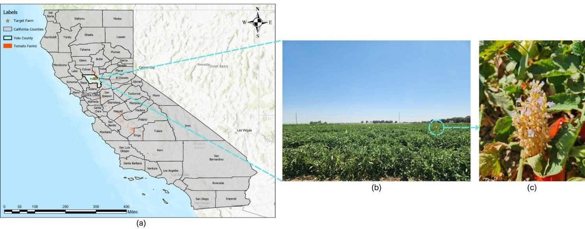
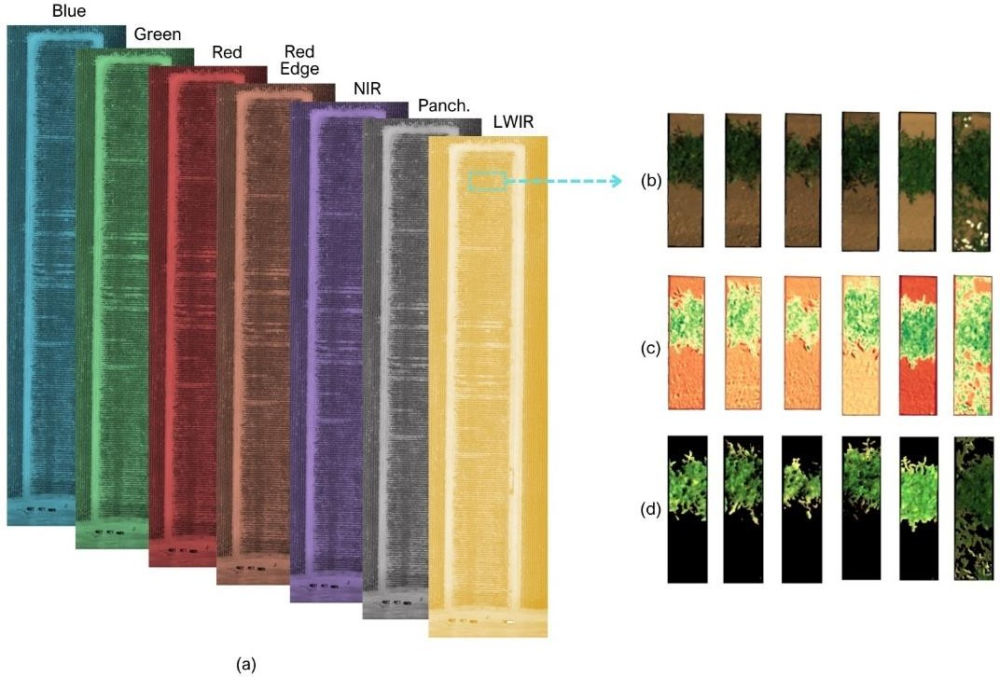
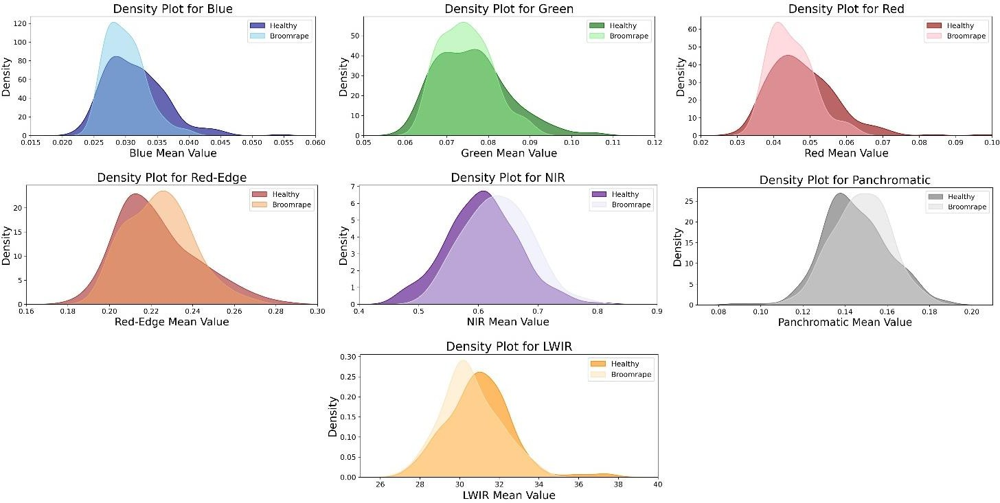
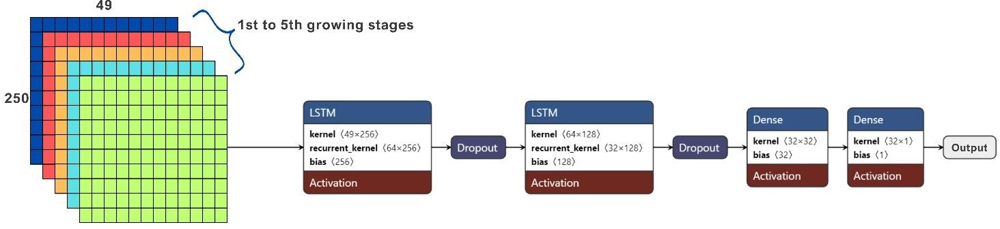
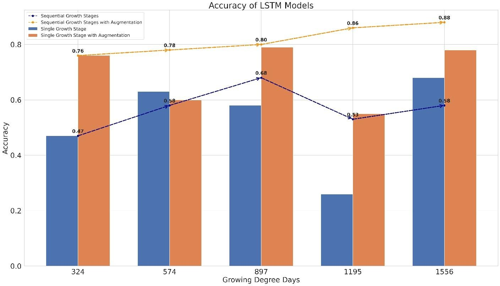
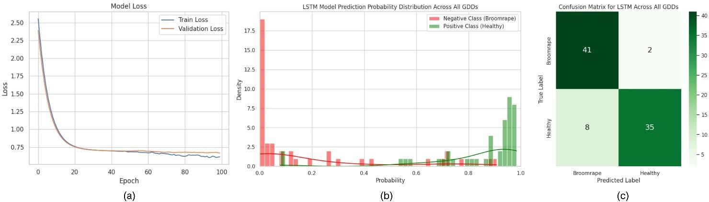

📷 Drone-Based Multispectral Imaging and Deep Learning for Timely Detection of Branched Broomrape in Tomato Farms
SPIE 2024 — Autonomous Air and Ground Sensing Systems for Agricultural Optimization and Phenotyping IX
Digital Agriculture Laboratory | University of California, Davis
Presented at SPIE 2024
This work was presented at SPIE Defense + Commercial Sensing 2024, National Harbor, Maryland, United States — Proceedings Volume 13053, Autonomous Air and Ground Sensing Systems for Agricultural Optimization and Phenotyping IX, https://doi.org/10.1117/12.3021219.

The Challenge
California produces over 90% of U.S. processing tomatoes, but branched broomrape (Phelipanche ramosa) threatens this vital crop. The parasite lives mostly underground, so by the time symptoms appear aboveground, damage is often severe. Conventional broad-spectrum herbicides are costly, environmentally harmful, and not always effective. We set out to detect broomrape earlier using drone-captured multispectral imagery and deep learning—so farmers can target treatments instead of treating entire fields.
Study Area and Data
We worked on a known broomrape-infested tomato farm in Woodland, Yolo County, California. We monitored 300 plants through the season; 49 were confirmed infected and 251 healthy. Aerial data was collected with a DJI Matrice 210 carrying a MicaSense Altum-PT sensor (multispectral + thermal). We aligned flights with key growth stages using growing degree days (GDD): 324, 574, 897, 1195, and 1556 GDD, with
GDD = (Tmax + Tmin) / 2 − Tbase (Tbase = 10°C for tomato)
Figure 1 shows the study location, the farm, and an example of a plant flagged as infected during scouting.

Figure 1: (a) California tomato farming counties and target farm; (b) target tomato farm; (c) tomato plant flagged as broomrape-infected.
From Raw Bands to Canopy Reflectance
We converted digital numbers to reflectance using calibration panels, cropped imagery to the 300 monitored plants, and used the Soil-Adjusted Vegetation Index (SAVI) to mask canopy from soil. That gave us clean reflectance values for each plant across seven bands (Blue, Green, Red, Red Edge, NIR, thermal). Figure 2 shows the full spectral stack and the processing steps—raw crop, SAVI, and final canopy mask.

Figure 2: (a) Seven spectral bands; (b) cropped RGB; (c) SAVI; (d) canopy mask.
Features and Imbalance
From each plant’s canopy we extracted statistical features (mean, standard deviation, uniformity, entropy, etc.) per band. With only 49 infected vs 251 healthy plants, we used SMOTE (Synthetic Minority Over-sampling) to balance the dataset. We then trained Long Short-Term Memory (LSTM) networks to use the sequence of growth stages—so the model could learn how reflectance changes over time in healthy vs infected plants. Figure 3 shows example distributions (KDE) for healthy vs infected at 897 GDD.

Figure 3: KDE plots at 897 GDD—healthy vs infected plants.
LSTM Model and Scenarios
We ran four scenarios: (1) each GDD stage alone, no SMOTE; (2) time-series over stages, no SMOTE; (3) each stage alone with SMOTE; (4) time-series over all stages with SMOTE. Scenario 4—all stages + SMOTE—performed best. Figure 4 is a simplified view of the LSTM architecture.

Figure 4: LSTM architecture (Netron).
Results
The earliest growth stage at which we could detect broomrape with acceptable accuracy was 897 GDD (79.09% accuracy, 70.36% recall for the infected class, with SMOTE, single stage). When we used all five stages in the LSTM (Scenario 4), we reached 88.37% overall accuracy and 95.37% recall for broomrape—so we catch nearly all infected plants while keeping false alarms manageable. Figure 5 summarizes accuracy across the four scenarios; Figure 6 shows training/validation curves, probability separation, and the confusion matrix for Scenario 4.

Figure 5: Overall accuracy across scenarios.

Figure 6: Scenario 4—training/validation, probability plot, confusion matrix.
Publication and Citation
Narimani, M., Pourreza, A., Moghimi, A., Mesgaran, M., Farajpoor, P., & Jafarbiglu, H. (2024, June). Drone-based multispectral imaging and deep learning for timely detection of branched broomrape in tomato farms. In Autonomous Air and Ground Sensing Systems for Agricultural Optimization and Phenotyping IX (Vol. 13053, pp. 16-25). SPIE.
Funding: California Tomato Research Institute (CTRI).
Contact
Mohammadreza Narimani
PhD Candidate, UC Davis